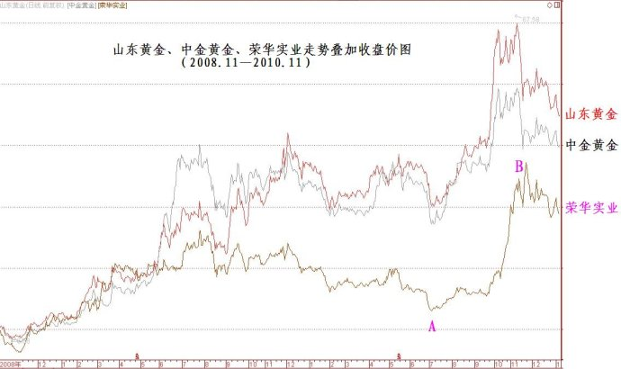
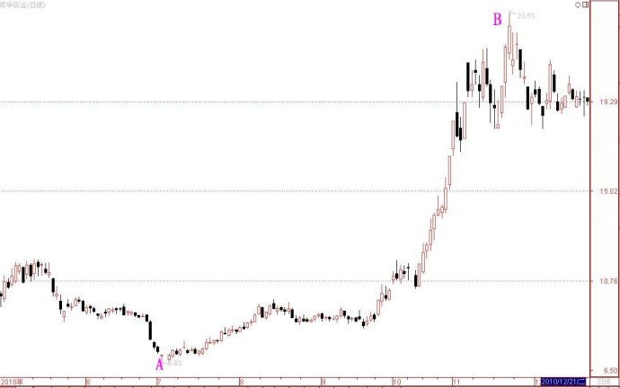
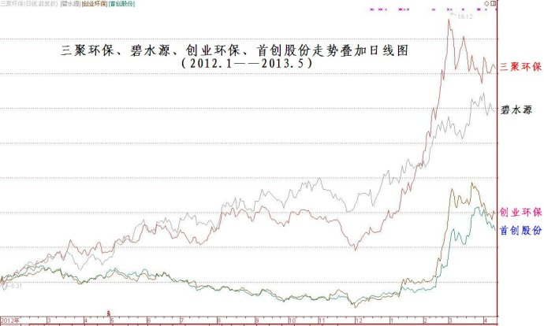

第348篇•用比价关系挖掘强势股
——对我的第二期《投资者说》节目补充解析
谷为陵
今天晚上北京电视台财经频道《投资者说》栏目播出了我六期系列专题节目的第二期，其主要内容是挖掘比价关系型强势股，或者说，是用比价关系挖掘强势股。
在步入正题之前，我先说两句闲话。因我最近的博客访问量暴增，我发现有很多新的网友刚开始接触我的博客，但其中有些人可能是才看了我最近几篇的博文，还没有对于我的主升浪战法形成整体认识，就仓促地对我提出了一些怀疑和质问。比如，我上篇博文介绍了我推荐中航投资、广州浪奇等的详细过程，但有几个网友说我这不过是马后炮，他们也会照着图这样说。还有一个网友甚至还摆出了他是如何在30元重仓买入天齐锂业，而该股现在已经涨到了40元的辉煌战绩，得意与炫耀之情溢于言表。我认为，假若他们好好读了我在去年12月的那几篇推荐中航投资、广州浪奇、博盈投资、天齐锂业、许继电气等股票的博文，就应该不会有这样的略显张狂的态度了。在那几篇博文里，我推荐天齐锂业的时候，该股股价正是在30元；推荐许继电气的时候，该股股价是18元，现在是28元；推荐博盈投资的时候，该股股价是在8.4元，而现在是15元，等等，但我至今也没有觉得这些有什么好炫耀的，因为挖掘强势股正是主升浪战法的应得成果，要是挖掘不出强势股，那主升浪战法还有何意义呢？
我要告诉大家，我总结出的强势股主升浪战法，是股市一个短线、中线操作效率最高的方法，但是，要熟练掌握这种战法，并非简单的事情，需要对于这种战法从理论到技法都很熟悉，且很熟练的程度。我在上篇博文中介绍的几个案例，都是我的实战案例，这些案例需要大家仔细体会，你若能够从中认识到一些你以前不知道或者忽视的东西，那么，你就已经在成长了。我要告诉那些虚心学习主升浪战法的网友，我所操作过的强势股的类型和模式，在市场中是可以不断重复的。在股市处于非弱势的情况下，一般每年可找出很多次确定性的操作机会。
好了，我言归正传，就来补充一下比价关系选强势股的相关内容。在我的《第323篇•关于用比价关系选股的问题》博文中，已经对于比价关系选股的问题进行较为详细的阐述。比价关系是指同板块股票之间，特别是热门板块中的股票的股价具有趋同性，易形成相近的股价定位，以及具有齐涨齐跌的现象。
比价关系的应用是多方面的，其中，最常见的应用就是去发现补涨型强势股。因比价关系引发的补涨存在五种模式：一是股价定位模式，二是同板块内的双龙头股轮动模式，三是同板块内股票轮动模式，四是不同板块的轮动模式，五是不同市场的轮动模式。我在今天晚上的《投资者说》中只讲了
“同板块内的双龙头股轮动模式”，其它四种还未来得及讲。
因时间所限，我现在只给大家补充一下“同板块内股票轮动模式”。这种模式的典型表现是：
龙头股→补涨股
即，在同板块中，龙头股先涨，其后，非龙头股接着补涨。用这种模式选股有两个关键点：一是所属板块一定是热门板块，越热越好；二是补涨股的股性最好是长期不涨或者长期下跌的低价股，股价越低，爆发力越大。一个很有趣的现象是，那些最后补涨的股票，往往是投资者事先都不看好的股票，在这些补涨股暴涨的时候，绝大多数投资者会感到很惊异，因为他们在之前很难相信，怎么会是这些以前不看好的股票暴涨起来了呢？若仅从这一点来看，那些补涨股都是绝对的黑马股。
所以，在股市里，永远不要带有色眼镜去看股票，任何股票在适当的条件下，都有可能出现一轮暴涨行情。我们的任务就是去发现引爆它们暴涨的条件！
案例1：黄金板块中股票轮动模式——荣华实业的补涨
山东黄金→中金黄金→荣华实业
（龙头股1）（龙头股2） （补涨股）
谁都知道，黄金板块的龙头股是山东黄金和中金黄金，谁会注意到这个板块中的一只称不上正宗的黄金股，而只能称为黄金概念股的荣华实业呢？但就是这只股票，在2010年7月至11月成为了涨幅最大的黄金股。以下是2008年11月至2010年11月三只黄金股的走势叠加图（收盘价线）：

在上图中，自A点到B点，荣华实业补涨的涨幅达到250%，同期山东黄金和中金黄金的涨幅仅为100%。以下是荣华实业自A点到B点的股价走势日线图：

案例2：环保中股票轮动模式——创业环保、首创股份的补涨
三聚环保-→碧水源-→创业环保-→首创股份
（龙头股1） （龙头股2）（补涨股1）
（补涨股2）
在环保股中，创业环保和首创股份因总股本最大，且业绩一般，股价长期低迷，最终都跌成了低价股，在去年12月初，它们的股价最低都跌到了3元多。我相信，在今年春节前，没有什么人看好这两只环保股。但是，就是这两只环保股，在今年春节后却异军突起，股价出现了暴涨。这是为什么呢？以下是自2012年1月至2013年5月三聚环保、碧水源、创业环保、首创股份的股价走势叠加图：

从上图可以看出，自2012年初至2012年12月初，环保板块中的龙头股三聚环保和碧水源就开始了一轮上涨行情，至2013年春节前，两只股票股价在一年的时间里均涨幅翻倍。但该板块中的创业环保和首创股份却自2012年初2012年12月初，股价还下跌了20%～30%，这两只股票与那两只龙头股在涨幅上出现了比价效应。但出现比价效应，并不见得一定会出现大幅补涨，大幅补涨的一个重要条件是，该板块成为市场热门板块。在春节后，这个条件就从“天”而降了——因春节期间的严重的“中国霾”而致环保问题成为了一个国计民生的首要问题，于是环保板块就自然成为了春节后股市最热门的板块。于是，有比价效应的低价环保股创业环保和首创股份就开始疯狂的补涨行情，这两只股票在一个月时间内股价均翻了倍，成为同期涨幅最大的股票。
比价关系是股市里常见的现象，是一种可重复模式，用比价关系选股，也是一种确定性很高的选股方法，关于这些，我以后还会深入讲解，今天就讲到这里吧。